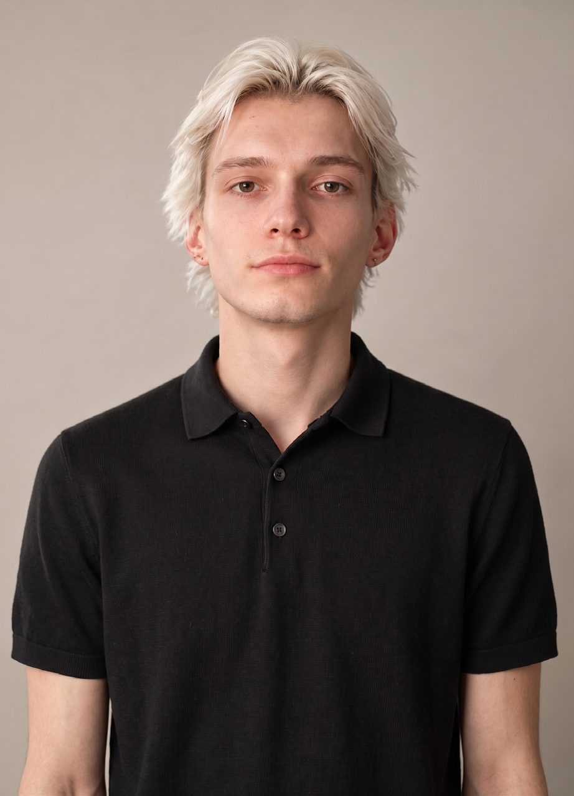

Insidewhat is standing
Maksym Rodin · Interior Architecture + Design · London
Selected work
The practice
I design new lives for old buildings, and draw them carefully enough to be built.
1stClass Honours, BA Interior Architecture and Design, 2026
7projects across three years, from sketchbook to listed building
1,200 m²Echo Cave, inside a Grade II listed store on Oxford Street
81dissertation mark, biophilic design in prisons
Selected work
All seven projectsYear one · the Moleskine
Drawn by hand first
Index · 2023 — 2026
Selectedwork
About
Both ends ofa project

An interior architect in London, working inside buildings that are already standing.
I graduated from London Metropolitan University in 2026 with a First Class BA (Hons) in Interior Architecture and Design.
My focus is adaptive reuse. I like working inside existing buildings, often listed ones, and finding a new use that the old fabric can carry without losing what makes it worth keeping.
I work at both ends of a project: the first sketch and the drawing package that gets it built. In most offices those are done by different people. I want to keep doing both.
My research looks at how rooms affect the people in them. My dissertation, marked 81, studied biophilic design in prisons through two case studies: Khoo Teck Puat Hospital in Singapore and Maggie's West London.
I am looking for a junior interior design or design assistant role in London, and I can start straight away.
Education
2023 — 2026BA (Hons) Interior Architecture and DesignLondon Metropolitan University. First Class Honours. Classification average 78.11%. Final-year modules marked 80, 80 and 80; dissertation 81.
2020 — 2023Diploma, College Preparatory ProgramTASIS The American School in England, Thorpe, Surrey. IB and AP/Honors courses.
Experience
March 2025E2 Architecture + InteriorsWork placement at a RIBA Chartered practice in Bethnal Green. Chapel conversion: boards, Revit plans, Twinmotion visuals.
2023 — 2024Front of house, Greene King and Fuller'sMayfair and Westminster, alongside the degree. A working knowledge of how hospitality spaces run from the inside.
Industry
Stone & Surfaces Show 2026UK Construction Week, main stage. 5 CPD credits.
Futurebuild, ExCeL LondonAttended every year.
Milan Design Week
BHMS Lucerne, 2022Two-week workshop on the global business and hospitality industry.
Capability
Software
Languages
Contact
Let'stalk
- maksym614@gmail.com
- Based in
- East London
London
Thank you for looking through my work.
I am looking for a junior interior design or design assistant position in London, especially on projects that reuse existing and historic buildings. I am available immediately and full time.
My CV and a PDF version of this portfolio are available on request. I reply to every message.